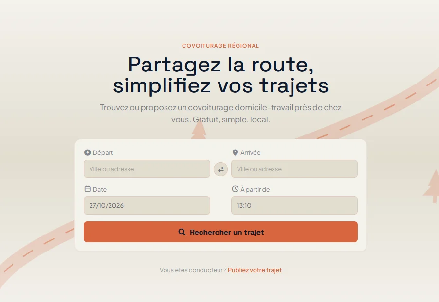
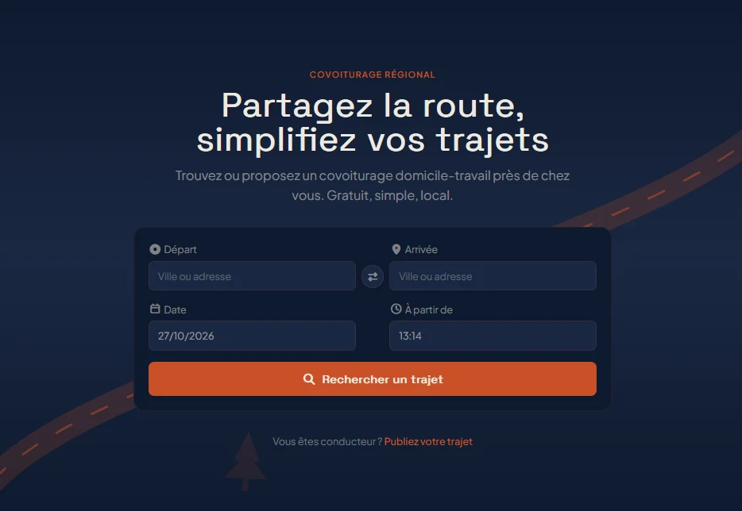

Projet phare
Kenweturi
Plateforme de covoiturage · projet d'équipe
Application web de covoiturage développée en équipe pour le Greta de Vannes. Conducteurs et passagers s’y retrouvent pour proposer, chercher et réserver des trajets.
Mon rôle : cahier des charges, conception de la base de données et back-end (modèles, contrôleurs, routes, sécurité)
- PHP
- CodeIgniter 4
- Tailwind
- MySQL